下記の場合、
/math-e3c0cbf91ece024841ff9fdb38694186.png "n\,\!") の実現には、ワイブル分布からの
の実現には、ワイブル分布からの/math-6ce07c4566b882f5b04c4fd4ec104550.png "y_i \,\!") 、 値
、 値 /math-b714d71dd0cdb2c881fae49429ac19db.png "x_i \,\!") が観測されます。
が観測されます。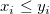

下記の場合、の実現には、ワイブル分布からの 、 値 が観測されます。
2つの状況があります。
次の場合、観測値を正確に指定します。 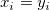
次の場合、下限によって知ることができる右側の打ち切り値を指定します。/math-9d9289175fcc3610c2f8f470c38f4780.png "x_i<y_i \,\!")
ワイブル分布の確率密度関数は、尤度に対して正確に指定した観測値の寄与となり、次の式で与えられます。
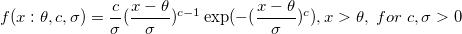
ワイブル分布の生存関数は、尤度に対して右側の観測値の寄与となり、次の式で与えられます。
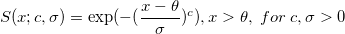
ここで、 /math-eda199874d89f6beec2062820f4b61c9.png "\theta\,\!") 切片パラメータはしきい値パラメータと呼ばれ、
切片パラメータはしきい値パラメータと呼ばれ、/math-79ce6cdd2db95f0db5cefeeadc51b5bc.png "c \,\!") は、ワイブルの形状パラメータであり、
は、ワイブルの形状パラメータであり、 /math-596589cfba308c784b8a5b3f8919ff44.png "\sigma \,\!") は、ワイブルのスケールパラメータです。
は、ワイブルのスケールパラメータです。
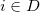 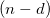 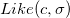 の観測の/math-a3fd7097926ade7405b7390b2e5ec4af.png "d\,\!") が、
が、
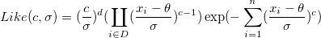
カーネル尤度関数は次式で与えられます。
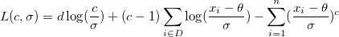
派生値 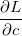 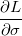 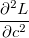 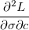 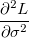 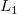 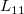 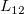 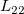 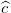 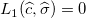 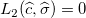/math-c21b34a55d751464f855b7b9abca0fd1.png "L_2 \,\!") ,
,/math-c064f955ca038366c16a6100a3090ea8.png "\widehat{\sigma } \,\!") は、次の数式の階です。:
は、次の数式の階です。:
および の漸近標準誤差の見積もりは、次の式で与えられます。
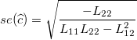 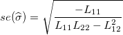
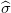 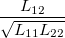/math-34e3a22fc702ec4461ac776139dd07cd.png "\widehat{c}\,\!") および
および